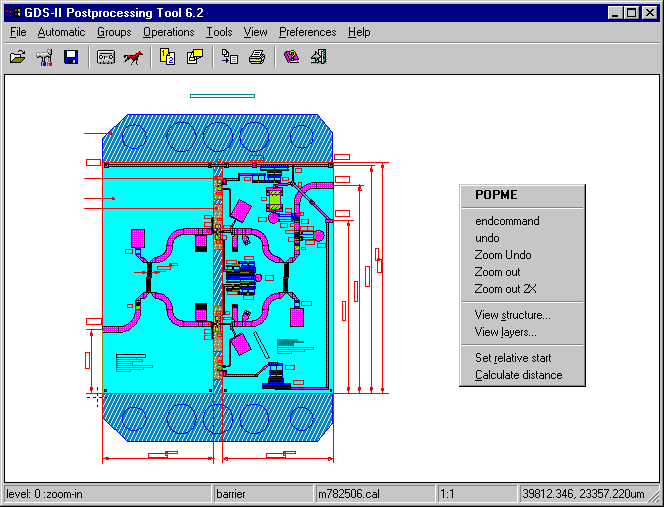

|
GDS-II Postprocessing Tool Help
|
Info on how to use the program using the Graphical Interface
Click in the picture below for help, or read here
some info on how to operate the program.

|
Working with the GDS-II tool
|
The GDS-II Postprocessing Tool can be used to modify GDS-II files. It's also
possible to save files in other formats. There are a few things that you
should know when working with the program.
- Frequently used functions can be called using the mouse-menu. To let
the mouse-menu popup, click with the right mouse button in the window.
- You can zoom in on a drawing. To do so, click the left mouse
button, in the picture, after releasing it the program will zoom in at this spot.
The new zoomfactor is visible in the statusbar. Zooming can be done until a zoomfactor of
approximately 1:100000 is reached. Then the text "Out of range" is placed
in the statusbar, and the picture is not drawn. Currently the zooming factor is 16.
- Another way of zooming into a drawing is dragging using your left mouse
button, in the picture. A rectangle will appear. When the mouse button is
released, the program will zoom in on this rectangle. The new zoomfactor
is visible in the statusbar. Zooming can be done until a zoomfactor of
approximately 1:100000 is reached. Then the text "Out of range" is placed
in the statusbar, and the picture is not drawn.
- Zoom out again using the mouse-menu are shorcut keys.
- You can also zoom back one step using the mouse-menu are shortcut keys.
- To select elements and structures, hold the control-key while clicking
with the left mouse button in the picture. When on a particular spot in the
picture there two or more elements are overlapping, the smallest is selected. A group
of elements / structures can also be selected. Drag using your left mouse
button and the control-key. All structures and elements completely in the
rectangle are selected.
- Deselecting works almost the same. Instead of the control-key, use the
shift-key.
- While drawing is in progress, clicking the mouse (any button) will stop the drawing process.
So a direct zoom in (rectangle or point) can follow.
- Drawing on the canvas starts with outlines always, at the same time a second canvas is
maintained in memory. When the complete drawing is finished or the drawing process is
interupted with the mouse, this memory canvas is copied to the screen.
The reason is that if overlapping windows are on top of boolean and later put in the back etc.
the redrawing is using the memory canvas to redraw the boolean window. This is fast.
| Using
shortcuts and Tools |
Interactive drawing and editing is organized around toolcontroller, the toolcontroller
maintains a stack of initiated tools. Every new tool is added to this stack.
This makes it possible to draw e.g. a polygon and in the mean time zoom in to
a specific area and draw some more points of the polygon. In the status bar
is shown which tool is active at the moment and how many commands are on the
stack.There are two kinds of behaviour for the tools, the first is continuous,
the other oneshot. For instance pressing 'm' will put the moving tool on the
stack, left clicking on a selected items and draging the mouse will move all
selected items.The move tool will stay active until 'esc' is pressed
or endcommand from the popup menu is pressed. If we are in the zoom tool
(first level), left clicking in a selected element will intiate the move tool
for moving the selected items, and after this remove the move tool from the
stack in order to return to zooming mode.
In all tools the shit and control keys will start the select and deselect tools
for one shot. As soon as the key is released we return back to the previous
tool.
Depending on the active tool, mouse clicks work different. In general editing
tools work on selected elements only and will start at a left click in/on a
selected element.
The following short cuts are defined for the canvas.
Select/Deselect keys:
- s select tool started (continuous)
Left Down Click followed by dragging the mouse select all in rectangle
Left Down followed by Left Up, select element at cursor.
- d deselect tool started (continuous)
Left Down Click followed by dragging the mouse deselect all in rectangle
Left Down followed by Left Up, deselect element at cursor.
- u unselect all elements (one shot)
- shit key select tool becomes active until released (oneshot)
- cntrl key deselect tool becomes active until released (oneshot)
Function keys:
- F5 to show the mouse pop up menu (not very usefull, just a right mouse
click does the same)
- F6 zoom back
- F7 zoom out
- F8 set relative start
- F9 calculate distance
Drawing keys (to draw primitives on the current insert layer which is visible
in the status bar):
- p insert a polygon (continuous)
Left Down Click for every vertex to add, Double click for end of polygon.
PopUp Menu Undo removes vertexes one by one.
- l insert a polyline (continuous)
Left Down Click for every vertex to add, Double click for end of polygon.
PopUp Menu Undo removes vertexes one by one.
- r insert rectangle (continuous)
Left Down Click followed by dragging the mouse.
- i insert circle starting at contour (continuous)
Left Down Click followed by dragging the mouse.
- o insert circle starting at middle (continuous)
Left Down Click followed by dragging the mouse.
Edit keys:
- e edit of selected element at a left mouse click (as for as supported
for that element) (continuous)
- k delete selected element at a left mouse click (continuous)
- m move selected elements (continuous)
- c copy selected elements (continuous)
- t rotate selected elements (continuous)
- q add/change properties which are attached to elements (continuous)
Zooming/scrolling keys:
- cursor up scroll up
- cursor down scroll down
- cursor left scroll left
- cursor right scroll right
- numeric pad - zoom back (oneshot)
- numeric pad + zoom in using mouse (oneshot)
- numeric enter zoom out to total (oneshot)
- f zoom out to total (oneshot)
- z zoom in using mouse (continuous)
The speedbar can be used to quickly execute frequently used commands.
Speedbar for drawing primitives and editing those primitives.
In the statusbar info about the program and current file is available. The
bar is split in five sections:
- Info about command / info about current operation
- Insert Layer or Recording is visible when a processfile is being recorded
- The name of the current file
- The current zoomfactor
- The coordinates of the current point